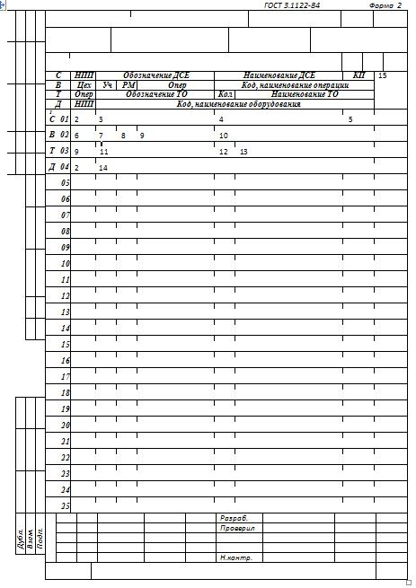
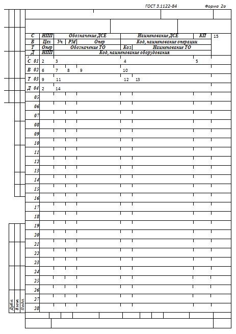
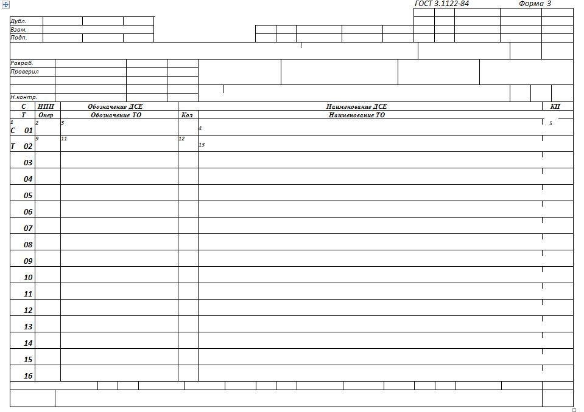
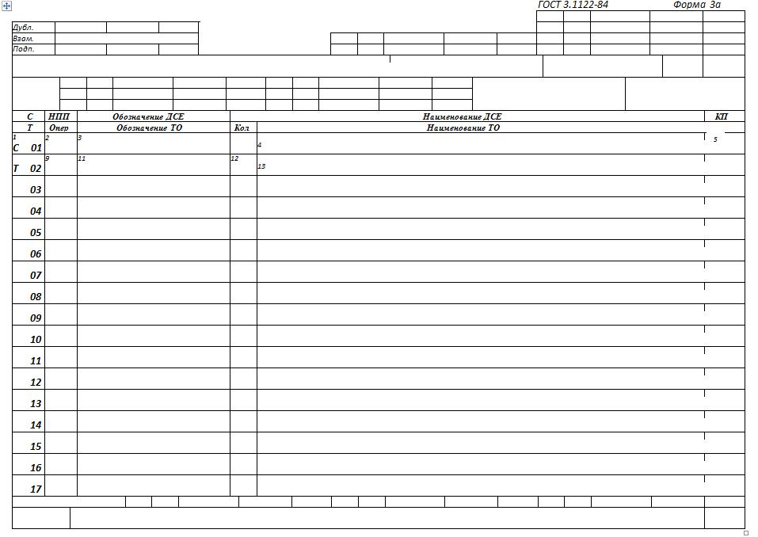
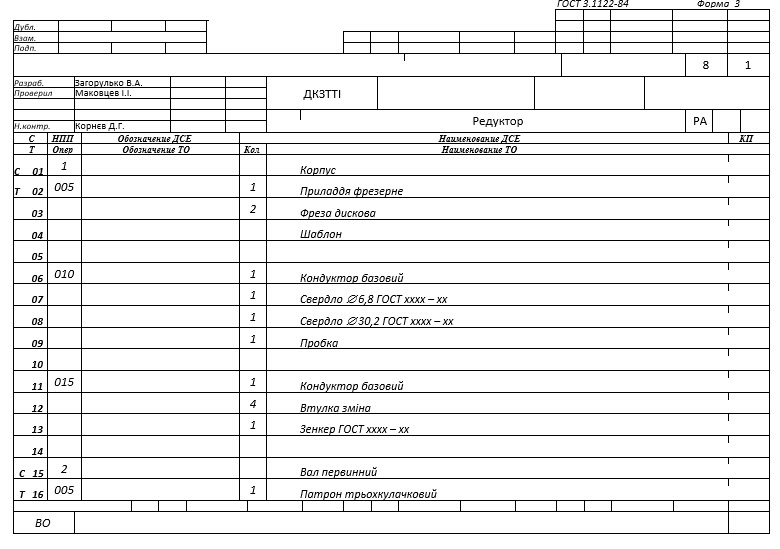
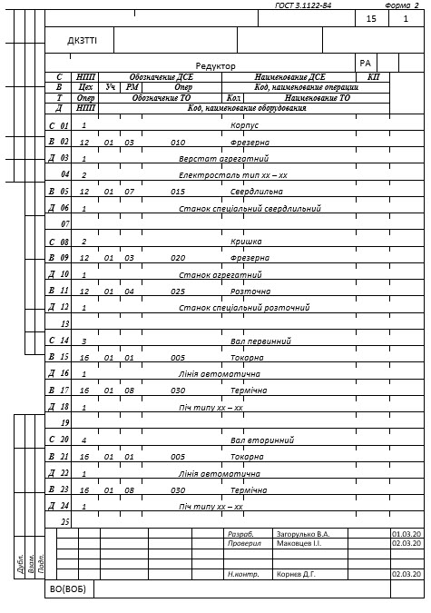
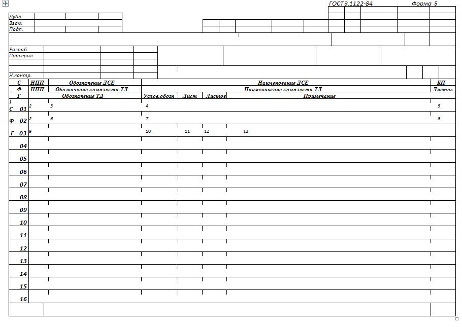
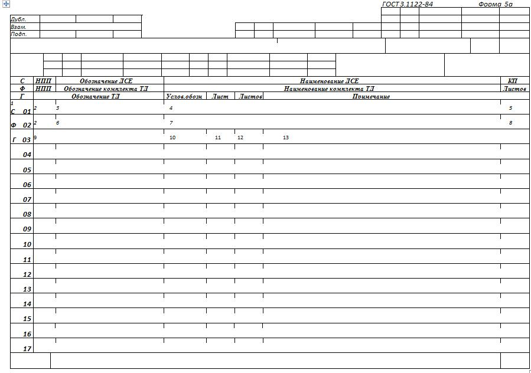

4.8 Форми й правила оформлення документів спеціального призначення (ГОСТ 3.1122-84)
4.8.1 Відомості
технологічні
При
заповненні форм документів використовують спосіб, при якому інформацію вносять
построково декількома типами рядків. Кожному типу рядка відповідає свій
службовий символ.
Вказівка
відповідних службових символів для типів рядків, залежно від розташовуваного
складу інформації, у графах форм документів варто виконувати відповідно до
таблиці 4.5.
Таблиця 4.5
|
Позначення службового
символу |
Зміст інформації, внесеної
в графи, розташованих на
рядку |
|
С |
Позначення деталі
(складальної одиниці) по конструкторському документу, її найменування й
код приналежності |
|
Т |
Інформація про
застосовувану при виконанні операції технологічному
оснащенню |
|
В |
Номер цеху, ділянки,
робочого місця, де виконується операція, номер операції, код і
найменування
операції |
|
Д |
Код, найменування
встаткування |
|
X |
Інформація про технічну
характеристику встаткування, про підприємство (організації) виготовлювачі
й про вартість
устаткування |
|
Ф |
Позначення й найменування
комплекту технологічних документів і загальна кількість листів у комплекті
документів |
|
Г |
Позначення технологічного
документа, його умовне позначення, порядковий номер листа документа, у
якому втримується інформація про деталь (складальній одиниці) і загальна
кількість листів у
документі |
4.8.2 Форми й правила оформлення відомості оснащення й відомості встаткування
Для розробки ВО варто застосовувати форми 2 і 2а, що мають вертикальне розташування поля підшивки, або 3 і 3а, що мають горизонтальне розташування поля підшивки (рисунок 4.8 та 4.9).
 
Рисунок 4.8 - Уніфікована форма відомості оснащення й відомості встаткування (заголовний і наступний листи)


Рисунок 4.9 - Форма відомості оснащення (заголовний і наступний листи)
ВО
варто розробляти до комплекту документів на технологічний процес виготовлення
(ремонту) виробу (складовій частини виробу), використовуючи рядок, що має
службовий символ Т. Допускається розробляти ВО на виріб, використовуючи рядки,
що мають службові символи С и Т.
При
розробці ВО на виріб дані варто записувати в наступному порядку: складальні
одиниці, деталі.
Замість
форми ВО допускається використовувати форми 2 і 4 МК, використовуючи для цього
рядок, що має службовий символ Т. Умовне позначення документа такого виду буде
МК/ВО. При розробці МК/ВО допускається:
-
указувати
інформацію «Номер цеху, ділянки, робочі місця й операції» разом з даними по
технологічному оснащенню;
-
указувати
постійну інформацію, характерну для всього технологічного процесу, один раз із
прив'язкою до першої операції, наприклад, «Номер цеху», «Номер
ділянки»;
-
проставляти
службовий символ Т на першому рядку, де зазначений «Номер операції», не
заповнюючи цю графу на наступних рядках;
-
указувати
інформацію про технологічне оснащення на початку документа без прив'язки до
номера операції, якщо вона є загальна для всіх операцій, наприклад засобу
індивідуального захисту, засобу виміру й т.п.;
-
записувати
інформацію про технологічне оснащення, загальну для декількох операцій, один раз
у першій операції із вказівкою в дужках номерів наступних
операцій.
Для
розробки ВОБ варто застосовувати форми 2 і 2а, з використанням рядків, що мають
службові символи С, В, Т и Д.
ВОБ
рекомендується застосовувати для обліку застосовності встаткування на виріб
(складову частина виробу). При необхідності вказівки інформації про технічну
характеристику встаткування, про підприємство (організації) виготовлювачі, про
вартість і т.д., її варто записувати з нового рядка з використанням службового
символу X. Запис інформації варто виконувати по всій довжині рядка з можливістю
переносу її на наступні рядки.
Для
розробки ВОБ допускається застосовувати форми 2 або 4 МК, при цьому інформацію
про технологічне встаткування, загальну для декількох операцій, допускається
записувати один раз у першій операції із вказівкою в дужках номерів наступних
операцій.
Графи
форм 2 і 2а, 3 і 3а варто заповнювати відповідно до таблиці
4.6.
Таблиця
4.6
|
Номер графи |
Найменування(умовне позначення) графи |
Зміст графи |
|
|
1 |
|
Позначення службового символу й порядковий номер
рядка |
|
|
2 |
НПП |
Номер один по
одному |
|
|
3 |
Позначення
ДСЕ |
Позначення деталі, складальної одиниці або комплекту
по конструкторському документу або
матеріалу |
|
|
4 |
Найменування
ДСЕ |
Найменування деталі, складальної одиниці або
комплекту по конструкторському документу або
матеріалу |
|
|
5 |
КП |
Код приналежності деталі, складальної одиниці. Графа
заповнюється для технологічної
відомості |
|
|
6 |
Цех |
Номер цеху, у якому застосовується дане технологічне
оснащення,
устаткування |
|
|
7 |
Уч. |
Номер дільниці, на якому застосовується дане
технологічне оснащення,
устаткування |
|
|
8 |
РМ |
Номер робочого місця, на якому застосовується дане
технологічне оснащення,
устаткування |
|
|
9 |
Опер. |
Номер операції, на якій застосовується дане
технологічне
оснащення |
|
|
10 |
Код, найменування
операції |
Код операції по технологічному класифікатору
операцій (ТКО), найменування
операції. |
|
|
11 |
Позначення
ТО |
Код (позначення) технологічного
оснащення |
|
|
12 |
Кіл. |
Кількість технологічного оснащення одного
позначення, застосовуваної на
операції |
|
|
13 |
Найменування
ТО |
Найменування технологічного
оснащення |
|
|
14 |
Код, найменування
встаткування |
Код устаткування по класифікатору, коротке
найменування встаткування, його інвентарний
номер. Інформацію варто вказувати через розділовий знак
«;». Допускається замість короткого найменування встаткування вказувати
його
модель. Допускається не вказувати код устаткування й
інвентарний
номер |
|
|
15 |
— |
Графа для особливих вказівок. Порядок заповнення
графи й обов'язковість заповнення встановлюються галузевими
НТД |
Приклади заповнення ВО та ВОБ наведені на рисунках 4.10 та 4.11.

Рисунок 4.10 - Приклад оформлення відомості оснащення

Рисунок
4.11 - Приклад оформлення відомості встаткування
4.8.3 Форми й правила оформлення відомості
технологічних документів
Форми
5, 5а є уніфікованими, їх можливо використовувати для розробки відомості
технологічних документів.


Рисунок
4.12 - Уніфікована форма відомості технологічних документів (заголовний і
наступний листи)
Графи уніфікованих форм варто заповнювати відповідно до таблиці 4.7.
Таблиця 4.7
|
Номер
графи |
Найменування умовне позначення)
графи |
Зміст
графи |
|
1 |
|
Позначення службового символу й порядковий номер
рядка |
|
2 |
НПП |
Номер по
порядку |
|
3 |
Позначення ДСЕ |
Позначення складальної одиниці, деталі, комплекту по
конструкторському документу або позначення
матеріалу. У розділі «Виріб» графи не
заповнюють |
|
4 |
Найменування
ДСЕ |
Найменування деталі, складальної одиниці або комплекту по
конструкторському документу або
матеріалу |
|
5 |
КП |
Код приналежності деталі, складальної одиниці. Графа заповнюється
для технологічної
відомості |
|
6 |
Позначення комплекту
ТД |
Позначення комплекту технологічних
документів |
|
7 |
Найменування комплекту
ТД |
Найменування комплекту технологічних
документів |
|
8 |
Листів |
Загальна кількість листів у комплекті
документів |
|
9 |
Позначення
ТД |
Позначення технологічного документа. У розділах «Складальні
одиниці», «Деталі», «Комплекти» і «Матеріали» — позначення технологічних
документів на складові частини виробу, що перераховуються в цих розділах,
і
матеріали |
|
10 |
Услов.
обозн. |
Умовне позначення виду
документа |
|
11 |
Лист |
Порядковий номер листа документа, у якому розміщується інформація
про деталь або складальну
одиницю |
|
12 |
Листів |
Загальна кількість листів
документа |
|
13 |
Примітка |
Графи для додаткових відомостей, порядок заповнення яких
установлюється галузевими
НТД |
ВТД
у загальному випадку повинні складатися з розділів, розташованих у наступному
порядку:
-
виріб;
-
складальні
одиниці;
-
деталі;
-
матеріали;
-
комплекти.
Наявність
тих або інших розділів визначається складом комплекту (комплектів) документів,
необхідних для виготовлення (ремонту) виробу або його складових частин. Вибір і
визначення відповідного комплекту (комплектів) документів установлюється в
кожному випадку розроблювачем документів виходячи з розв'язуваних завдань.
Найменування кожного розділу вказують у графі «Найменування
ДСЕ».
У
розділі «Виріб» перераховують комплекти ТД на виготовлення (ремонт) виробу в
цілому, наприклад на складання, випробування, упакування й т.д. і зведені
документи на виріб - ВМ, ВО, ВОБ і інші зведені документи.
У
розділах «Складальні одиниці» і «Деталі» перераховують комплекти ТД або окремі
документи, застосовувані при виготовленні (ремонті) складальних одиниць,
деталей.
У
розділі «Матеріали» перераховують комплекти ТД або окремі документи на процеси
виготовлення (обробки) матеріалів, у тому числі й для технологічних деталей,
приготування компаундів, смол, клеїв, і т.д.
У
розділі «Комплекти» перераховують комплекти ТД або окремі документи,
застосовувані при виготовленні комплектів.
Порядок
запису позначень комплектів ТД усередині кожного розділу встановлюється
розроблювачем документів залежно від черговості виконання технологічних
дій.
Для
розробки ВТД варто застосовувати типи рядків, що мають службові символи С, Ф и
Г.
Допускається
переносити інформацію на наступний рядок (наступні рядки) при неможливості
запису її в даних графах. Запис інформації на наступних рядках варто виконувати
по всій довжині рядка без вказівки відповідного службового
символу.
З
метою оптимізації запису інформації у ВТД допускається вказувати тільки
позначення наступних основних документів, що входять у комплекти документів на
технологічні процеси: титульного листа (при його наявності), маршрутної карти
або карти технологічного процесу (карти типового технологічного
процесу).
Приклад заповнення ВТД наведений на рисунку 4.13.
Рисунок 4.13 - Приклад оформлення відомості технологічних документів